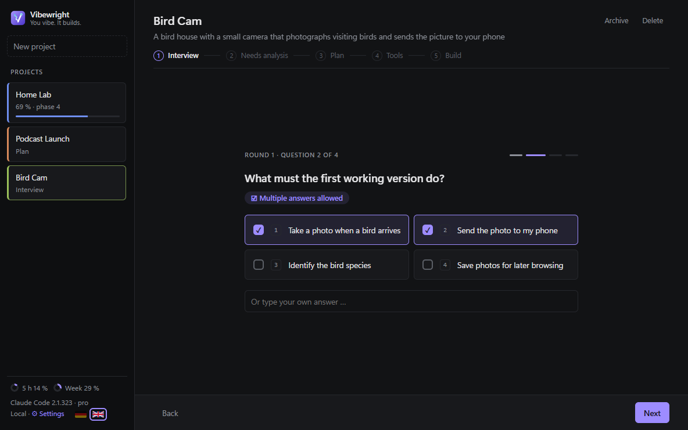
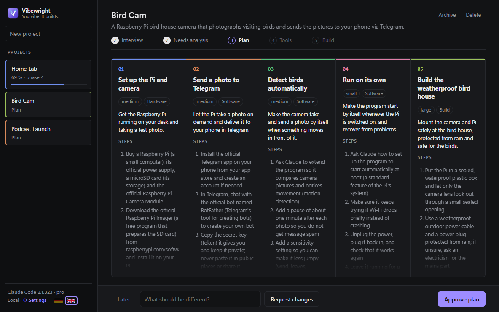
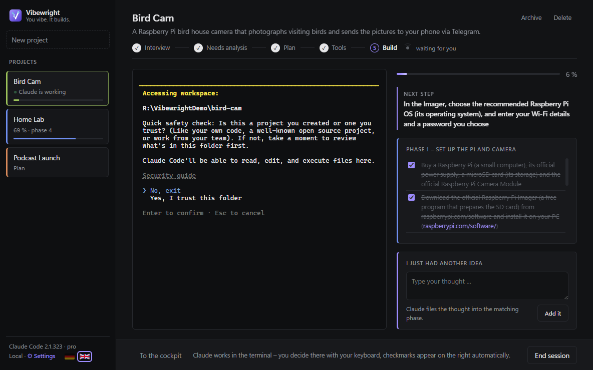
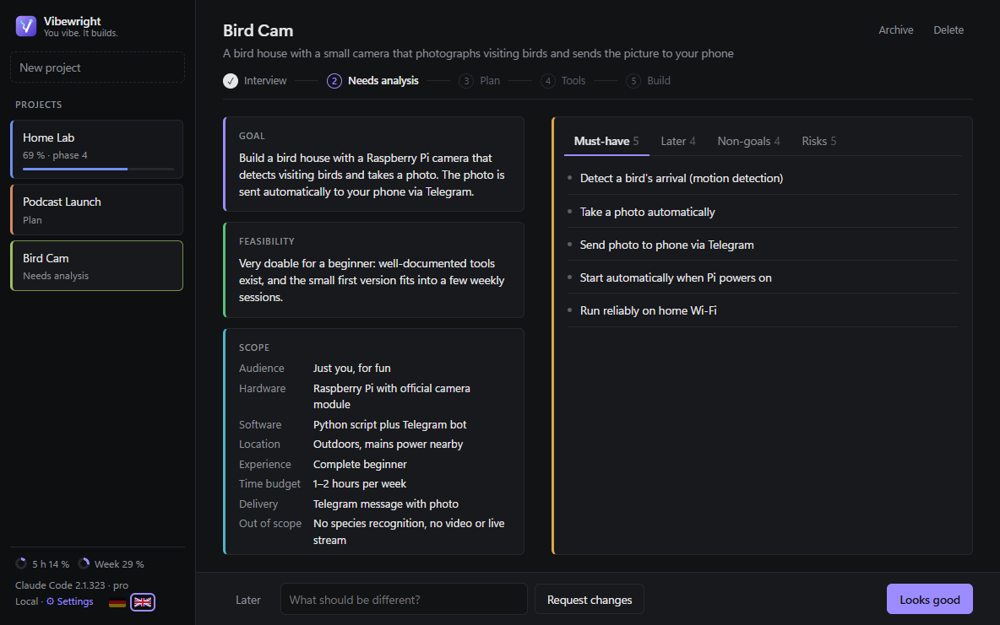
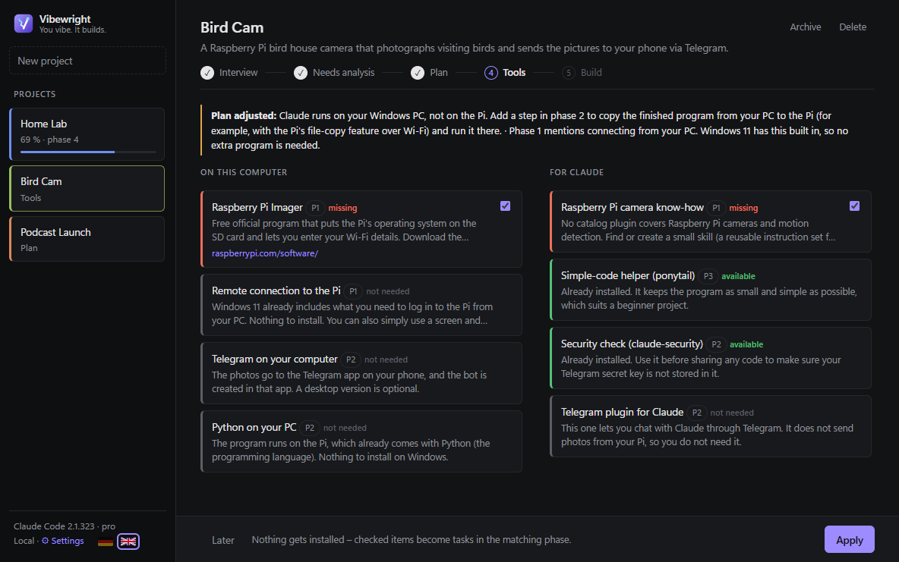
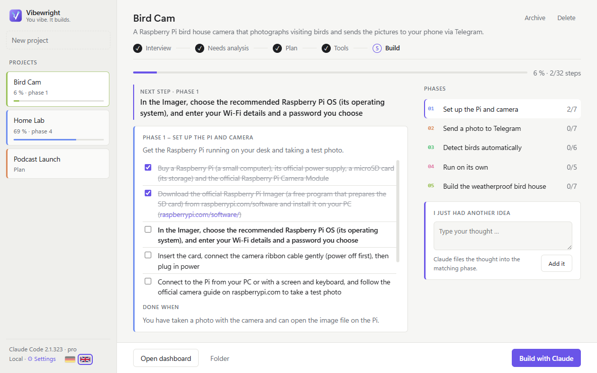

Vibewright macht aus deiner Idee einen klaren Plan – und setzt ihn Schritt für Schritt mit Claude Code um, direkt in der App. Du klickst und gibst frei. Claude erledigt die Arbeit.
Windows 10/11 & macOS 11+ · benötigt Claude Code
Ablauf
Von „Ich hätte gern …“ zu „Es läuft“ – ohne Chat-Chaos, verstreute Notizen und halbfertige Pläne.
Ein Satz reicht – eine Vogelhaus-Kamera, ein Podcast, ein Heimserver. Vibewright stellt ein paar Fragen zum Anklicken.
Du bekommst eine Bedarfsanalyse, einen Plan in Phasen und einen Check der nötigen Werkzeuge. Ohne dein OK passiert nichts.
Claude Code läuft in der App, kennt deinen Plan und hakt jeden erledigten Schritt ab. Du siehst immer, wo du stehst.
Funktionen
Vibewright übernimmt das Projektmanagement – du kümmerst dich um den spannenden Teil.
Eine Frage pro Bildschirm, eigene Antwort jederzeit möglich. Nachfragen nur, wo etwas fehlt.
Ziel, Umfang, Muss-Kriterien, Risiken, an die du nicht gedacht hast, und eine Machbarkeits-Ampel.
3–6 Phasen mit klarem „Fertig, wenn …“ und konkreten Schritten in einfacher Sprache.
Prüft deinen PC und dein Claude-Setup und empfiehlt nur, was eine Phase wirklich braucht.
Ein eingebautes Terminal mit passender CLAUDE.md. Erledigte Schritte werden live abgehakt.
Alles landet in deinem Obsidian-Vault (Dataview, Kanban) oder als .md-Dateien mit HTML-Dashboard.
Gedanken jederzeit eintippen – Claude sortiert sie in die passende Phase ein.
Optional: Claude committet nach jedem Schritt, du kannst jederzeit zurück.
Fertige Code-Projekte holen neue GitHub- oder Gitea-Issues ab – nichts kommt ohne deinen Klick in den Plan.
Screenshots
Dunkel oder hell – immer übersichtlich, nie überladen.






FAQ
Ja. Die App ist kostenlos und Open Source (MIT). Du brauchst ein eigenes Claude-Abo – empfohlen ist Pro oder Max.
Nein. Die Schritte sind in einfacher Sprache geschrieben, du entscheidest per Klick. Den technischen Teil erledigt Claude Code.
Pläne und Notizen werden als Dateien auf deinem Rechner gespeichert (Obsidian-Vault oder ein Ordner deiner Wahl). Nur Claude Code spricht mit Anthropic – mit deinem eigenen Konto. Vibewright hat keinen Server und kein Tracking.
Windows 10/11 (64 Bit) oder macOS 11+, dazu Claude Code, angemeldet. Obsidian und Git sind optional.
Jeder Installer wird von VirusTotal geprüft und hat eine SHA-256-Prüfsumme. Die Mac-App ist von Apple signiert und notarisiert. Der Windows-Installer ist noch nicht signiert, daher kann SmartScreen warnen – „Weitere Informationen → Trotzdem ausführen“ klicken.
Lade Vibewright kostenlos herunter und mach aus deiner nächsten Idee ein fertiges Projekt.